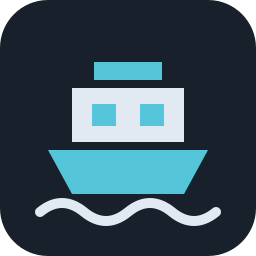

Linux
x86-64 · AppImage
Download AppImageUbuntu 24.04 or compatible
glibc 2.39+ · Wayland or X11

FerryDockA native Docker workbench
Your containers, logs and terminals.
One focused window. A little less context switching.
Find containers by project, service or image. See CPU and memory live, and start, stop or restart without leaving the window.
Actual app screenshots with example projects.
Built in Rust with GPUI. A focused workspace for your daily Docker work.
Connect to your local Docker daemon and Compose projects. No account to create.
MIT licensed and developed in the open. Take a look around
READY WHEN YOU ARE
Bring your own Docker installation. We’ll bring the workbench.
x86-64 · AppImage
Download AppImageUbuntu 24.04 or compatible
glibc 2.39+ · Wayland or X11
x86-64 · Debian package
Download .debUbuntu 24.04 or compatible
glibc 2.39+ · Installs dependencies
Apple Silicon · Disk image
Download .dmgmacOS 15+ · Apple Silicon only
Ad hoc signed · Not notarized
Drag FerryDock into Applications. If macOS blocks it, go to System Settings → Privacy & Security → Open Anyway. This preview is pending native desktop verification.
x86-64 · Portable ZIP
Download .zipWindows 10/11 x64 · Unsigned
Docker Desktop · Linux containers
Extract the ZIP and open ferrydock.exe. Start Docker Desktop in Linux containers mode first. Windows may show a SmartScreen warning; verify the download with the linked checksums. This preview is pending native desktop verification.